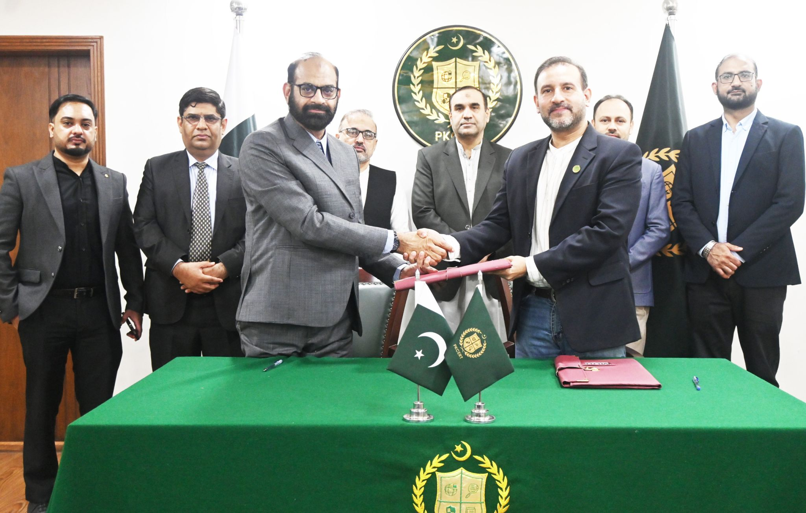
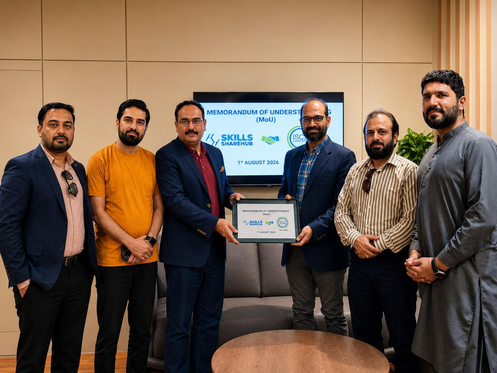

Home
Welcome to the ISC2 Islamabad Chapter, we hope to serve you with warmth and a mission to build a secure and protected digital world.
Islamabad Chapter is one of the leading ISC2 communities in South Asia. Over the past years, our dedicated leadership team has worked tirelessly to develop this beautiful all-inclusive community, serving a purpose as a force for good across Pakistan's cybersecurity landscape.

A proud and meaningful milestone for the ISC2 Islamabad Chapter and Pakistan's cybersecurity community.
This strategic collaboration between National CERT Pakistan and the ISC2 Islamabad Chapter represents more than an MoU — it is a commitment to collectively strengthen Pakistan's cybersecurity ecosystem through capacity building, professional development, knowledge exchange, research, mentorship, and collaboration across government, academia, and industry.
Our focus now is on turning this collaboration into tangible initiatives, measurable outcomes, and lasting impact for cybersecurity professionals, students, academia, government institutions, and the broader digital ecosystem of Pakistan.
Together, we can build a stronger, more resilient, and globally competitive cybersecurity community.
Looking forward to an impactful journey ahead.

We are pleased to announce that the ISC2 Islamabad Chapter has signed a MoU with Skills Share Hub, marking the beginning of a strategic partnership to strengthen Pakistan's cybersecurity ecosystem through collaboration, education, and community engagement.
Together, we are committed to:
- Promoting cybersecurity awareness across industry, academia, and the wider community.
- Strengthening university engagement and supporting the next generation of cybersecurity professionals.
- Delivering exclusive technical talks, webinars, workshops, mentorship initiatives, and CPE-eligible events for our members.
- Advancing professional development through globally recognized cybersecurity learning opportunities.
- Building a stronger, more connected, and resilient cybersecurity community in Pakistan.
This partnership represents a shared vision to create meaningful opportunities for knowledge sharing, capacity building, and continuous learning. We look forward to unveiling a series of exciting initiatives and exclusive events in the months ahead.
We extend our sincere appreciation to the leadership teams whose vision and commitment made this collaboration possible: Saad Moten, President, ISC2 Islamabad Chapter; Syed Salman Aziz, Treasurer, ISC2 Islamabad Chapter; Nazir Ahmed Qureshi, CEO, SkillShareHub; Abdullah Qamar, Director, SkillShareHub; and Tahir Mansoor K., Cybersecurity Professional. Together, we are committed to empowering Pakistan's cybersecurity community.
Our Vision
A Pakistan where cybersecurity is practised by a recognised, credentialled and connected profession — and where Islamabad is the country's centre of gravity for that profession.
Our Mission
To grow, connect and equip cybersecurity professionals in the Islamabad region — by providing continuous technical learning, structured mentorship, credible industry and government engagement, and a defensible route into the profession for students and career changers.
Our Purpose
Our purpose is to educate, empower, embrace and engage our community through every step of their careers.
Our Commitment
We are committed to delivering on our mission with an aim to bring a human touch to cybersecurity in Pakistan.
Our Story So Far
In 2020, during the ISC2 regional conference, a group of committed young professionals first met with a shared vision of building a thriving community for security professionals in Islamabad. What started as an idea among passionate colleagues has flourished beyond what any of us could have imagined.
Today, the chapter stands strong with over 500 members across Pakistan. Together, we've coordinated more than 25 engaging events — thanks in large part to the unwavering support of local Islamabad and Rawalpindi companies who generously opened their doors, providing us with venues and refreshments.
Our heartfelt thanks to the National CERT, Internet Society Islamabad Chapter, and the many sponsors who have backed us throughout the years. Your commitment has empowered our members to connect, learn, and raise the bar for our profession.